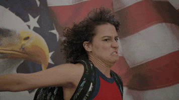

The idea of this lab was to further create a local file structure on my computer and add index.html files.
Challenges
In this assignment, we worked on two different pages: The intro page in the main art101 index, and this page for Lab 3. We wanted to make sure that we understood each part of the assignment, as we've struggled in this class. Since this is a new skill, we are dealing with a lot of uncertainty. It is always uncomfortable being new to something. There is a lack of confidence and security. For our intro page, we wrestled with our border and the pictures. We originally started off with a border and the pictures at the same time, but, at some point, we must've forgotten some element in the process of editing, because when we went back to the page, one thing or the other was missing. We also couldn't figure out how to make our links work so they would bring up our Lab 2 and 3 sites.

Results
We're really proud about where we landed with this assignment. It was super tricky for us to figure out. It mostly came down to typos in our codes. We compared our work to another as well as enlisting the help from our TA's and other folks in our class. At the end of the day, we got our pages to work! We got the links to go to our labs, our images the right size, and our borders to show up. It was a really frustrating process, but we made it through mostly unscathed.
